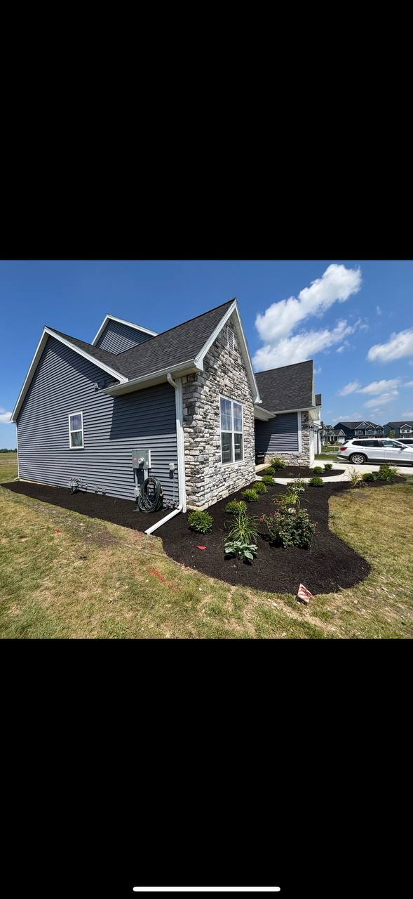

Terramorph LLC | Perrysburg, Ohio
Landscape design, patios, and drainage built for Northwest Ohio.
From full-property transformations to wet-yard fixes and dependable upkeep, Terramorph plans the work around your property, priorities, and local conditions.
Start With The Project
What Do You Need Handled?
Pick the closest fit. Terramorph can scope related work together if the job crosses categories.
Featured work
Outdoor projects that make the property feel finished.
From patios and walkways to entry landscaping, drainage, lighting, and upkeep, the work should look intentional from the street, the backyard, and every place people actually use the property.
 Estate lawn and property careClean mowing patterns, established landscape edges, and coordinated outdoor presentation.
Estate lawn and property careClean mowing patterns, established landscape edges, and coordinated outdoor presentation.

New-construction landscapingFoundation beds, new plantings, mulch, and clean property presentation. Retaining wall installationModular block, cap course, stepped termination, and a clean driveway transition.
Retaining wall installationModular block, cap course, stepped termination, and a clean driveway transition.
 Large-lot lawn maintenanceConsistent striping, broad coverage, and clean presentation around property edges.
Large-lot lawn maintenanceConsistent striping, broad coverage, and clean presentation around property edges.
Core Services
The major outdoor problems Terramorph can solve.
Start with the project you need handled. Terramorph can scope the main work and the related details around it so the whole property feels cleaner and more complete.

Primary service
Landscape Installation and Design
Design planning, bed layouts, plant installation, sod, mulch, rock, edging, grading awareness, and full installation.
- Plant installation
- Mulch and rock beds
- Sod installation
- Bed shaping
- Native habitat rehabilitation

Primary service
Paver Patios and Walkways
Paver patios, walkways, seating areas, retaining details, steps, fire pits, outdoor kitchens, and hardscape structure.
- Patios
- Walkways
- Fire pits
- Outdoor kitchens
- Retaining walls
- Concrete coordination

Primary service
Drainage Solutions
Drainage diagnosis, grading, runoff routing, wet-yard solutions, soil-aware recommendations, and practical fixes for Northwest Ohio lots.
- Standing water
- Soggy lawns
- Downspout routing
- Grading
- Erosion control
- Dry creek features

Primary service
Outdoor Lighting
Low-voltage lighting for paths, patios, entries, landscape features, safety, security, and nighttime curb appeal.
- Path lights
- Accent lighting
- Patio lighting
- Entry lighting
- Security visibility

Primary service
Lawn Maintenance
Residential and commercial mowing, edging, trimming, bed upkeep, brush control, and recurring property presentation.
- Mowing
- Edging
- Trimming
- Weeding
- Bed maintenance
- Commercial maintenance

Primary service
Seasonal Cleanups
Spring and fall cleanups, pruning, leaf removal, debris removal, bed resets, overgrowth control, and property preparation.
- Spring cleanup
- Fall cleanup
- Leaf removal
- Spring pruning
- Tree and bush trimming
- Debris hauling

Primary service
Snow Removal
Dependable winter service for homes, businesses, and properties that need safe access when Northwest Ohio weather hits.
- Driveways
- Walkways
- Commercial lots
- Ice management
- Winter response
Local expertise
Locally owned and operated for Northwest Ohio property problems.
Terramorph brings practical field experience and a property-first approach to drainage, grading, plant health, hardscape base issues, maintenance needs, and seasonal work before recommending a scope.
See Our Local ApproachProperty-First Planning
A simpler path from property problem to estimate.
Start with the property problem, review the right service options, see real work and named customer reviews, then request a clear estimate.
Customer Reviews
Homeowners describe responsive service and dependable follow-through.
Read what local customers say about Terramorph’s communication, scheduling, crew, and finished work.
★★★★★“Amazing service every time and prompt to all appointments.”
— CJ Miller
★★★★★“Great work at a fair price. They did what they said they were going to do, when they said they would do it. Fast, friendly. Will definitely use them again.”
— Richard Hansen
★★★★★“Ty and his team put hydro mulch down in my front yard and they did an excellent job. The grass is looking awesome! Thanks guys.”
— Derrick Fawley
Fast free estimate
Request My Outdoor Transformation Quote
Share the service, property location, timeline, project notes, and photos in the secure form. The Terramorph team receives the request directly and can follow up with the right next step.
If the embedded form does not load, open the secure Jobber request form directly.
Open Jobber Quote Form Call 419-873-6801Send the useful details
Help the team qualify the project before the first call.
- Property city and address
- Service needed and the problem to solve
- Preferred timeline and access notes
- Current photos of the project area